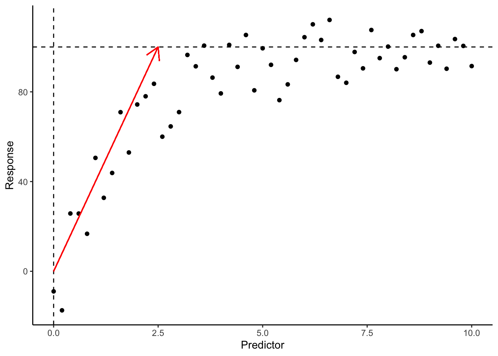

Code
# Generate some data with an asymptotic relationship
set.seed(442) # set seed
asymptotic <- tibble(
predictor = seq(0, 10, by = 0.2),
response = 100 * (1 - exp(-0.5 * predictor)) + rnorm(length(predictor), mean = 0, sd = 10)
)Linear relationships are simple to interpret since the rate of change is constant – i.e. as \(x\) changes, \(y\) changes at a constant rate. For non-linear relationships – as \(x\) changes, \(y\) changes at an unproportional rate. To simplify interpretation and enable the use of linear models, it is often recommended to transform non-linear data to make it approximately linear.
Transformation is usually possible for monotonic relationships (i.e. relationships that are always increasing or decreasing) such as exponential growth curves. The most common transformations are:
| Name | Transformation |
|---|---|
| Inverse | \(y = \frac{1}{x}\) |
| Root | \(y = \sqrt[a]{x}\) |
| Exponential | \(y = e^x\) |
| Logarithmic | \(y = \log_a(x)\) |
However, in the case of non-monotonic relationships (e.g. polynomials, asymptotic, logistic) transformation may not be enough to make the data meet the assumptions. In this section, we look at fitting non-linear models.
\[ Y_i = f(x_i, \beta) + \epsilon_i \] where \(f(x_i, \beta)\) is a nonlinear function of the parameters \(\beta\).
The assumptions for non-linear regression are INE (Independence, Normality, Equal variance).
A polynomial equation is an extension to linear regression and can still be fitted using least squares. Typically, a polynomial equation has multiple terms of the same predictor (i.e. one \(x\)). The more terms in the polynomial, the more complex the model and the less likely it follows an actual biological relationship. A complex model may ‘fit’ the data well, but fail to represent the true relationship between the variables (overfitting).
\[ Y_i = \beta_0 + \beta_1 x_i + \beta_2 x_i^2 + ... + \beta_k x_i^k + \epsilon_i \] where \(k\) is the degree of the polynomial.
To fit a polynomial, we still use the lm() function. To create the polynomial terms, we use the poly(x, n) function, where x is the predictor and n is the degree of the polynomial.
Below is an example with asymptotic data – it increases rapidly to a certain point and then levels off. The linear model (blue) does not capture the complexity of the relationship. The polynomial model with 10 terms (green) fits the data well, but it is too complex between \(x\) = 5-10. In this case, the polynomial model with 2 terms (red), aka the quadratic model, fits the data the best.
ggplot(asymptotic, aes(x = predictor, y = response)) +
geom_point(size = 2) +
labs(x = "Predictor", y = "Response") +
geom_line(aes(y = predict(mod_lin)), color = "slateblue", size = 1.5, linetype = 2) +
geom_line(aes(y = predict(mod_poly2)), color = "brown", size = 1, linetype = 1) +
geom_line(aes(y = predict(mod_poly10)), color = "seagreen", size = 1.5, linetype = 2) +
theme_classic()This is also evident when comparing the summary() of the models. The linear model explains the least amount of variation in \(y\) (Multiple R-squared = 57.01%). The 2-term polynomial model explains 81.95% of variation (Adjusted R-squared), whereas the 10-term polynomial model explains 86.21% of variation (Adjusted R-squared). The first three terms of the polynomial model are significant, the fourth is almost significant, but the remainder are not. Comparing the 2 and 10-term polynomial models, are the extra 8 terms worth an extra 4.26% of variation explained? Considering the 10-term polynomial is very complex and overfitted – the principle of parsimony would say ‘no’.
Call:
lm(formula = response ~ predictor, data = asymptotic)
Residuals:
Min 1Q Median 3Q Max
-60.838 -11.028 -1.038 16.376 31.392
Coefficients:
Estimate Std. Error t value Pr(>|t|)
(Intercept) 41.9163 5.4567 7.682 5.88e-10 ***
predictor 7.5804 0.9404 8.061 1.54e-10 ***
---
Signif. codes: 0 '***' 0.001 '**' 0.01 '*' 0.05 '.' 0.1 ' ' 1
Residual standard error: 19.77 on 49 degrees of freedom
Multiple R-squared: 0.5701, Adjusted R-squared: 0.5613
F-statistic: 64.97 on 1 and 49 DF, p-value: 1.544e-10
Call:
lm(formula = response ~ poly(predictor, 2), data = asymptotic)
Residuals:
Min 1Q Median 3Q Max
-33.056 -7.199 -0.193 8.959 22.482
Coefficients:
Estimate Std. Error t value Pr(>|t|)
(Intercept) 79.818 1.776 44.951 < 2e-16 ***
poly(predictor, 2)1 159.368 12.681 12.568 < 2e-16 ***
poly(predictor, 2)2 -106.939 12.681 -8.433 4.92e-11 ***
---
Signif. codes: 0 '***' 0.001 '**' 0.01 '*' 0.05 '.' 0.1 ' ' 1
Residual standard error: 12.68 on 48 degrees of freedom
Multiple R-squared: 0.8268, Adjusted R-squared: 0.8195
F-statistic: 114.5 on 2 and 48 DF, p-value: < 2.2e-16
Call:
lm(formula = response ~ poly(predictor, 10), data = asymptotic)
Residuals:
Min 1Q Median 3Q Max
-17.1659 -8.6908 -0.0494 8.8003 16.4012
Coefficients:
Estimate Std. Error t value Pr(>|t|)
(Intercept) 79.818 1.552 51.426 < 2e-16 ***
poly(predictor, 10)1 159.368 11.084 14.378 < 2e-16 ***
poly(predictor, 10)2 -106.939 11.084 -9.648 5.37e-12 ***
poly(predictor, 10)3 48.570 11.084 4.382 8.28e-05 ***
poly(predictor, 10)4 -19.411 11.084 -1.751 0.0876 .
poly(predictor, 10)5 1.193 11.084 0.108 0.9148
poly(predictor, 10)6 -2.769 11.084 -0.250 0.8040
poly(predictor, 10)7 -1.343 11.084 -0.121 0.9042
poly(predictor, 10)8 -4.009 11.084 -0.362 0.7195
poly(predictor, 10)9 -2.851 11.084 -0.257 0.7984
poly(predictor, 10)10 5.769 11.084 0.520 0.6056
---
Signif. codes: 0 '***' 0.001 '**' 0.01 '*' 0.05 '.' 0.1 ' ' 1
Residual standard error: 11.08 on 40 degrees of freedom
Multiple R-squared: 0.8897, Adjusted R-squared: 0.8621
F-statistic: 32.26 on 10 and 40 DF, p-value: 4.846e-16The hypothesis of a polynomial model is similar to that of multiple linear regression. A significance test is done for each individual coefficient, but we only consider the significance of the highest order term. For example, if a 10-term polynomial model is used but \(x^10\) is not significant, then a simpler model should be considered.
\[H_0: \beta_k = 0\] \[H_0: \beta_k \neq 0\] There is also an overall model significance, but if the highest order term is significant, the model will be significant.
\[H_0: \beta_1 = \beta_2 = ... = \beta_k = 0\] \[H_0: \beta_1 = \beta_2 = ... = \beta_k \neq 0\] In the case that all coefficients are zero, the model is better represented by the mean of the data.
As for interpretation of the quadratic model, we can write the equation, but the coefficients do not have much meaning.
\[\text{response} = 79.82 + 159.37 \cdot \text{predictor} + -106.94 \cdot \text{predictor}^2\] Given it is a quadratic equation, we could calculate the peak of the curve (\(x_{peak} = -\frac{b}{2a}\) and substitute to get \(y_{peak} = c - \frac{b^2}{4a}\)). For a polynomial of a higher degree, it would not be meaningful.
Although a little out of order, we can also check the assumptions. Recall that linearity is not an assumption for a non-linear model – we can disregard the shape of the line for the Residuals vs Fitted plot, and focus on the distribution of the point around the line (which is even). The residuals fall on the line for the Normal-QQ plot indicating residuals are normally distributed, and the Scale-Location plot shows the residuals evenly distributed (equal varince), and there are no extreme outliers in the Residuals vs Leverage plot.
To fit a non-linear model, we use the nls() function. While it is still a regression model that minimises the sum of squares, as there is no closed-form analytical solution, so nls() (i.e. nonlinear least squares) fits the model iteratively with numerical methods. Thus it requires initial parameter guesses, which can be obtained from domain knowledge, data exploration, or trial and error.
formula: a formula object, with the response variable on the left of a ~ operator, and the predictor variable(s) on the right.data: a data frame containing the variables in the model.start: a named list of starting values for the parameters in the model.The nls() function can be used to fit most non-linear models including but not limited to exponential, polynomial, asymptotic, and logistic models.
Several self-starting functions are becoming available in R. These automatically estimate the initial parameters. There are some pre-defined functions available (e.g. nlraa::SSexpf(), SSasymp() and SSlogis()). These should give the same (or near identical) results as estimating the parameters as the model still uses nonlinear least squares.
In the event a slightly different function is required a new self-starting function can be defined – this is quite complex, and beyond the scope of this course.
An exponential relationship either grows or decays at an increasing rate. The equation for an exponential relationship is:
\(y = y_0e^{kx}\)
Where,
\(k\) can be estimated with the equation \(slope = k = \frac{log_e y_{max} - log_e y_{min}}{x_{max} - x_{min}}\), but usually a value of 1 is a good starting point. If it is a decay curve, \(k\) will be negative (i.e. -1).
Because of the equation for the exponential curve, \(y_0\) cannot be zero.
set.seed(123)
growth <- tibble(
predictor = seq(0, 10, by = 0.2),
response = abs(exp(0.5 * predictor) + rnorm(length(predictor), mean = 1, sd = 5))
)
ggplot(data = growth, aes(x = predictor, y = response)) +
geom_point() +
geom_hline(yintercept = 0, linetype = "dashed") +
labs(x = "Predictor", y = "Response") +
theme_classic()Based on the plot, we can estimate the initial parameters for the model. The lower limit (\(y_0\)) is around 0, and the rate of change (\(k\)) is around 1. We can then fit the model.
After we fit out model, we assess the assumptions plots and check our residuals for INE.
Nonlinear regression is often done with purpose (i.e. the data has a certain shape or there is a known relationship), so the assumptions are often met. If they are not met, the fit and statistics may not be as reliable – but the relationship may be too complex to model altogether.
Formula: response ~ y0 * exp(k * predictor)
Parameters:
Estimate Std. Error t value Pr(>|t|)
y0 1.1694 0.1291 9.059 4.82e-12 ***
k 0.4847 0.0121 40.057 < 2e-16 ***
---
Signif. codes: 0 '***' 0.001 '**' 0.01 '*' 0.05 '.' 0.1 ' ' 1
Residual standard error: 4.409 on 49 degrees of freedom
Number of iterations to convergence: 8
Achieved convergence tolerance: 1.204e-06The model is significant given the p-value is less than 0.05 for all parameters. If this were real data (e.g. population growth), the parameters themselves could be useful, e.g. rate of change. The parameterised model equation is: $ y = 1.17 e^{-0.484x} $.
The R-squared value is not reported for nonlinear models as the sum of squares is not partitioned into explained and unexplained components. The residual standard error and plots can be used instead to compare between models.
The Number of iterations to convergence is the number of times the computer changed the parameters to try and get a better fit.
If the starting values are too far (most likely the ‘rate of change’ term), the model will not run and there will be an error. However, there is some flexibility allowed. Below we use some inaccurate initial estimates – the model still reaches the same result (fit, parameters, errors), it just takes more tries (iterations).
mod_exponential <- nls(response ~ y0 * exp(k * predictor),
data = growth,
start = list(y0 = 10, k = 2)
)
summary(mod_exponential)
Formula: response ~ y0 * exp(k * predictor)
Parameters:
Estimate Std. Error t value Pr(>|t|)
y0 1.1694 0.1291 9.059 4.82e-12 ***
k 0.4847 0.0121 40.057 < 2e-16 ***
---
Signif. codes: 0 '***' 0.001 '**' 0.01 '*' 0.05 '.' 0.1 ' ' 1
Residual standard error: 4.409 on 49 degrees of freedom
Number of iterations to convergence: 33
Achieved convergence tolerance: 5.692e-07The self-starting function for exponential curves can be found in the nlraa package. The function is SSexpf() and has the same formula as above – but has different names for parameters (\(y_0\) = \(a\), \(k\) = \(c\)). We can re-define the names of the parameters when we use the function. It reaches the same result with less effort and typically fewer iterations.
An asymptotic relationship is a type of non-linear relationship where the response variable approaches a limit as the predictor variable increases. This is common in growth curves, where growth is rapid at first and then slows down as it approaches a maximum (e.g. age vs height, population growth, diminishing returns). There are multiple equations for an asymptotic relationship, but we will cover the equation that is covered by the self-starting function SSasymp().
\[ y = Asym + (R_0-Asym) \cdot e^{-e^{lrc} \cdot x} \]
With the nls() function, we first need to estimate our initial parameters for \(R_0\), \(Asym\) and \(lrc\). We can do this by plotting the data and making an educated guess. For the asymptotic data, we can see that the lower limit (\(R_0\)) is around 0 and the upper limit (\(Asym\)) is around 100. The rate of change (\(lrc\)) is a little harder to estimate, so we will guess a value of 0.8.
If the model returns an error (singular gradient matrix at initial parameter estimates), we can try different values – the most likely culprit will be the rate of change (\(lrc\)).
ggplot(data = asymptotic, aes(x = predictor, y = response)) +
geom_point() +
geom_hline(yintercept = 100, linetype = "dashed") +
geom_vline(xintercept = 0, linetype = "dashed") +
## plot the rate
geom_segment(aes(x = 0, y = 0, xend = 2.5, yend = 100),
arrow = arrow(length = unit(0.5, "cm")),
color = "red"
) +
labs(x = "Predictor", y = "Response") +
theme_classic()
The alternative is to use SSasymp() and skip the estimation of the parameters. We simply list the predictor, then the names we want the three parameters to be called. The order is pre-defined, so we must label Asym, R0 and lrc in that order. We could use letters (a, b, c) or any other interpretable names.
After we fit out model, we assess the assumptions plots and check our residuals for INE – they look fine.
Finally, we evaluate the model. The model is significant since the p-value is less than 0.05 for all parameters. There is not much to interpret - except the Residual standard error. We can compare models directly with this error term. R2 is not calculated for non-linear models.
The resulting model equation would be \(y = 98.5 + (-14.5-98.5) \cdot e^{-e^{-0.463} \cdot x}\).
Formula: response ~ SSasymp(predictor, Asym, R0, lrc)
Parameters:
Estimate Std. Error t value Pr(>|t|)
Asym 98.5204 2.2852 43.113 < 2e-16 ***
R0 -14.5176 6.6416 -2.186 0.03374 *
lrc -0.4626 0.1134 -4.079 0.00017 ***
---
Signif. codes: 0 '***' 0.001 '**' 0.01 '*' 0.05 '.' 0.1 ' ' 1
Residual standard error: 10.21 on 48 degrees of freedom
Number of iterations to convergence: 0
Achieved convergence tolerance: 3.197e-07We can then plot the original data and the line of best fit.
Logistic regression is a type of non-linear regression typically used when the response variable is binary (0 or 1). The logistic function is an S-shaped or sigmoid curve that models the probability of the response variable being 1. The equation that SSlogis() (base R) assumes \(y\) is positive and uses:
\[ y = \frac{Asym}{1+e^{\frac{xmid-x}{scal}}} \] where
So if we were to estimate the initial parameters…
And we would estimate the initial parameters for the model. The upper limit (\(Asym\)) is around 300, the inflection point (\(xmid\)) is around 5, and the rate of change (\(scal\)) is around 1.
But we can also use the self-starting function SSlogis().
The assumptions seem to be met.
And then we interpret.
Formula: response ~ SSlogis(predictor, Asym, xmid, scal)
Parameters:
Estimate Std. Error t value Pr(>|t|)
Asym 319.16801 4.58138 69.67 <2e-16 ***
xmid 4.97308 0.06899 72.08 <2e-16 ***
scal 1.37636 0.05176 26.59 <2e-16 ***
---
Signif. codes: 0 '***' 0.001 '**' 0.01 '*' 0.05 '.' 0.1 ' ' 1
Residual standard error: 9.763 on 48 degrees of freedom
Number of iterations to convergence: 0
Achieved convergence tolerance: 1.88e-06The model is significant since the p-value is less than 0.05 for all parameters. The parameterised model is \(y = \frac{310}{1+e^{\frac{4.93-x}{1.35}}}\). The Residual standard error is 4.41 (which is not bad considering \(y\) ranges from 0 ot 300).
Finally, we visualise our model.
While the examples so far have a distinct and clear relationship, it is often not as clear with real-world data. So how can we compare which model best fits the data?
We have come across several options already, e.g. R2 and residual standard error. The residual standard error (RSE) is the square root of the sum of squared residuals divided by the degrees of freedom. The lower RSE is, the better the model fits the data. There are many other ‘prediction quality’ metrics!
Some commonly used examples include: